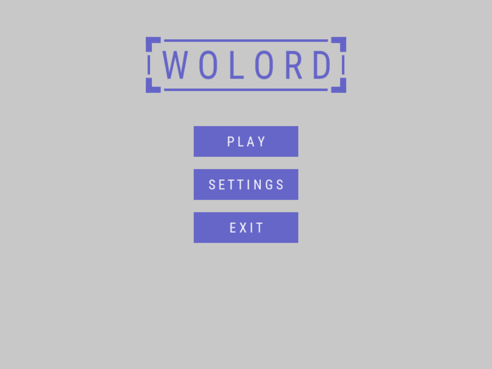
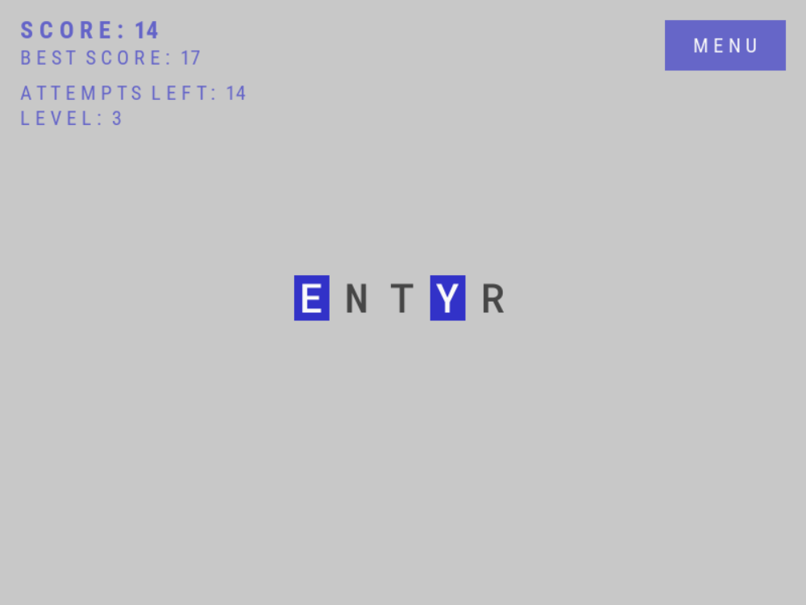
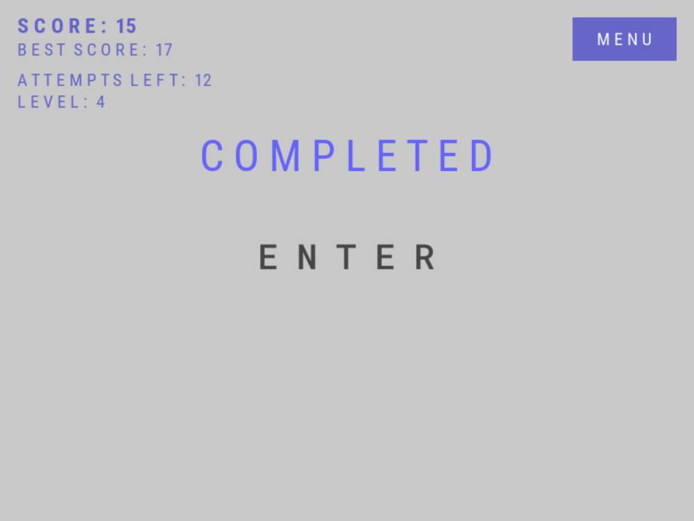
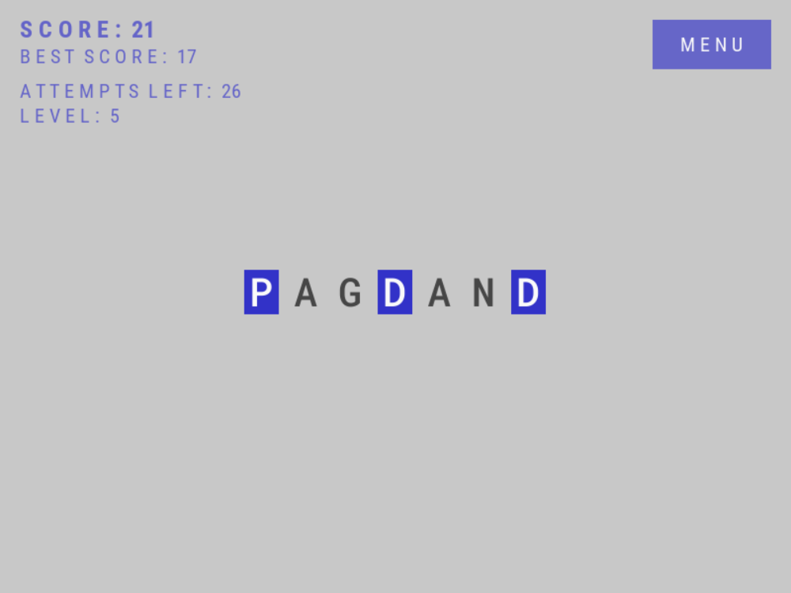
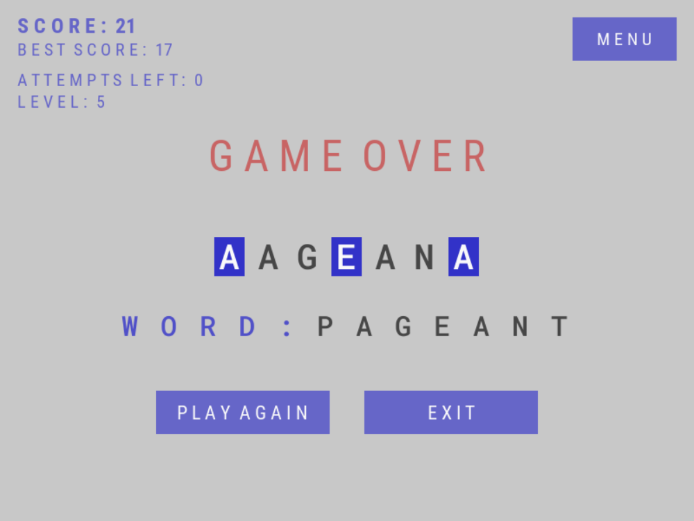

GAMES AND OTHERS SOFTWARE DEVELOPED BY KILIAS
Genre(s) Puzzle
Mode(s) Single Player
Theme(s) Abstract
Release(s) Prototype, May 9, 2022
Platform(s) Windows
Written in C++
Used Libraries SDL 2
Tags 2D | Brain Training | Endless | Minimalist | Mouse only | Procedural Generation | Relaxing | Single Player | Word game
Wolord is a minimalistic endless word puzzle game.
Game on Indie DB | itch.io | Game Jolt | Kartridge
Download installer (Wolord.exe) | Download portable (Wolord.zip)
    